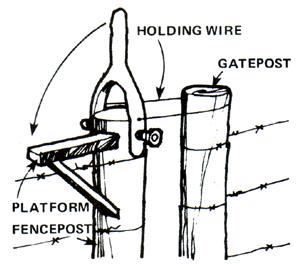
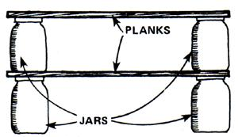
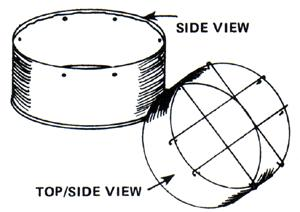

More Mother's Down-Home
Tips from Matt Wagner on sunflower scrub brushes, Elizabeth Wester on growing lemon seedlings, Stuart Slifer, on turning old blue jeans into a saddlebag, T. Fancki on wallpapering with comics, Rick Fletcher on building a latching device for a wire fence gate, Mrs. Bill Hebbert on cleaning cast-iron cookware, Phil Bailey on fueling bee smokers with sumac, Donna Bosowicz on sealing broken crocks with beeswax, Debbie Meeiman on saving your tomatoes from the frost, Helen Ashworth on counteracting skunk smell with vinegar, Laurie Ogletree on extending the storage life of winter squash, Linda McBride on relieving the symptoms of scours in a calf, lamb or pig, Patricia Green on using old jars for shelves, Pam Marbourg on rinsing paint brushes in vinegar, Donald Beisser on extending the life of your chain saw, Mary Ann Yakubisin on pickles,Sharon Cohen on turning a wood stove into an oven, Murray Darby on storing sweet potatoes, Geraldine Siegel on using newspaper to discourage hens from eating eggs, and Joanne Gregg on building a stove top toaster.
by NANCY BUBELE
September/October 1977
Country Lore
Need a stout scrub brush for a really messy cleanup job? "Use a de-seeded sunflower head!" says Matt Wagner of Amherst, Ohio. "Once all the seeds have been rubbed off, the dried flower makes a surprisingly effective scouring pad . . . and a biodegradable one, too! When you're done scrubbing, you can just toss the used pad into the fireplace, or add it to the compost pile."
"Lemon seeds," writes Mrs. Elizabeth Wester of St. Paul, Minnesota, "will grow into lovely little shrubs if you'll plant them and treat 'em as you would houseplants. Not only that, but the foliage of lemon seedlings makes a good flavoring: Just tie a few leaves up in cheesecloth and drop them into a pot of stewed apples or prunes during the last few minutes they're cooked."
The news from Stuart Slifer (a sheepherder in Dell, Montana) is that an old pair of blue jeans makes a great saddlebag. "Just tie the leg openings shut," says Stuart, "and fill the britches with salt, grain, clothes, or whatever you like, taking care to distribute the load evenly between the two legs. Then fling the pack behind your saddle, and off you go!" No horse? Heft the pack onto your own shoulders!
"I wanted something different to decorate my bathroom wall," writes T. Fancki of Poteet, Texas. "So I covered the entire thing with color comics! It was fun and inexpensive to do ... and the end result is a wall that's as unique as it is entertaining!"
Got a wire fence gate that's difficult to close? Try the latching apparatus devised by Rick Fletcher of Fort Collins, Colorado: First, find (or make) a "Y"-shaped piece of wood or metal that'll fit over the top of the stationary fencepost . . . then drill a hole through the top of the post, bore a hole through the end of each arm of the fork, and attach the "Y"shaped latch handle to the post with a long bolt (see diagram).
Next, attach a loop of wire (long enough to reach from fencepost to gatepost when the gate is closed) to the "Y"shaped handle just above the hinge point. Also, on the fencepost--just below the handle's attach point-make a little "platform" on which the lever can rest
To close the gate tight, all you have to do now is slip the wire loop over the gatepost and flip the "Y" lever over onto the platform. Presto! The gate is "latched" ... until you decide to unlatch it by lifting up on the handle and disconnecting the wire loop.
An excellent way to remove stubborn food residues from a cast-iron pot or pan-according to Mrs. Bill Hebbert of Milwaukee, Wisconsin -is to place the utensil in a bed of red-hot coals. "Most pieces will burn clean in about an hour," writes Mrs. Hebbert, "after which they can be left to cool and-if necessary--reseasoned. Sure beats scrubbing the utensil-and marring its smooth surface-with steel wool!"
You'll save time and temper when butchering (or marketing) day rolls around if you'll use a "pig box" (like the one devised by Betty and Phil Agar of Ferndale, Washington) to catch that reluctant oinker. Build a lightweight box two feet wide, four feet long, and two to three feet tall, without a top or bottom . . . then attach a handle (that extends up high enough to reach easily) to each end of the enclosure. Now all you and your helper have to do to get the pig to go where you want him to go is drop the box over the animal . . . and walk him to the waiting truck, butcher, or customer.
In case you didn't know, cast-iron cookware that's been seasoned is both easier to clean and less prone to rust than unseasoned pots and pans. Susan Hofmann of Lake Huntington, New York recommends the following procedure: First, spread a light coat of lard or salad oil on the inside of the utensil. Next, place the pot or pan on a sheet of heavy aluminum foil and bake it in a 200°F oven for about three hours. (Brush more fat or oil onto the piece from time to time, as the initial coating is absorbed into the metal.) Then remove the pot or pan from the oven, allow it to cool, wipe away the excess oil, and wash it in warm water, using no soap. Finally, return the utensil to the still-warm oven to dry.
Phil Bailey of Baltimore, Ontario has found a good substitute for the burlap strips that beekeepers have traditionally used to keep their smokers going: He fuels his bee smoker with the dried heads of sumac bushes (those fuzzy, brownishred clusters that are so abundant throughout the U.S. and Canada in the fall). The burning sumac, Phil says, produces a good, thick, long-lasting smoke.
"Don't throw away that expensive crock just because it has a crack that leaks," writes Donna Bosowicz of DoverFoxcroft, Maine. "Instead, pour melted beeswax into the crack a little at a time, so that the flaw is sealed along its entire length. Melt or scrape the excess off, and reapply wax each season. Your crock will be perfectly serviceable again!"
Then frost threatens your tomatoes, do as Debbie Merriman of Boyne City, Michigan does: Pull the vines up by the roots, tie them together in pairs at the base, and drape the pairs over a horizontal pole in a garage or other cool, dark place. Says Debbie: "The love apples on those vines will continue to ripen for weeks this way, as long as you keep'em from freezing."
Most folks know that tomato juice rubbed into the fur will counteract the foul odor of a dog who's tangled with a skunk. "What you may not know," says Helen Ashworth of Heuvelton, New York, "is that plain ole vinegar works just as well . . . and is a lot less messy."
"You'll find you can extend the storage life of your winter squash," writes Laurie Ogletree of Tyrone, Oklahoma, "by dipping their stems in melted beeswax or paraffin." Laurie adds that squashes which have lost their stems are es. pecially prone to early rot, but that a coat of wax applied to the "scar" will render the damaged vegetable less prone to spoilage.
Here-courtesy of Linda McBride, Big Limber, Montana-is a simple, safe, and effective way to relieve the symptoms of scours in a calf. Iamb, or pig: Bring a pan of raw milk to a boil. al. low it to cool, and skim off the -skin" that's formed on top of the liquid . .. then feed this "scum" to your ailing animal. Linda adds: *If you happen to boil or scorch milk intended for a healthy animal or person, you can counteract the constipating effect of the "burned" liquid by stirring a bit of honey into it."
Scrap planks and one-gallon pickle and mayonnaise jars (which can be scrounged from restaurants) can be stacked to make shelves for your books, kitchen supplies, canned goods, or whatnot, according to Patricia Green of Key
West, Florida. Pat adds that the jars are a perfect place to store your collections of shells, buttons, stones, etc., or even (as in Pat's case) an emergency water supply.
Got a bunch of stiff old paint brushes? Unstiffen 'em . . with vinegar! "Just boil the brushes in white vinegar," advises Pam Marbourg of Collins, Missouri. "Then rinse them with warm water and soap. This treatment will loosen most any type of paint."
Donald Beisser--who runs a small firewood business in Wappingers Falls, New York-offers this tip for chain saw users: "Whenever you've got your saw down for repairs or routine maintenance, take the bar off and put it back on upside down. Since most of your cutting is done on the bottom of the bar, this practice of occasionally switching surfaces will cause the bar to wear more evenly and thus last longer."
Pickles of any kind will be firmer-even when heatprocessed-if you'll put one grape leaf into each jar, says Mary Ann Yakubisin of Andover, Ohio. Mary Ann also suggests that when you have cukes that are too big to pickle whole or slice lengthwise for dilling that you cut them into pickle chips that will be just the right size to go on hamburgers.
Folks who heat with wood are only a step away from baking with the same fuel, even without a cookstove. All you have to do is find an old tin breadbox, place it right on top of your heater, and use it as a mini-oven. Sharon Cohen of Clallam Bay, Washington says she's baked bread, cookies, and cake in just such a make shift oven. "Most old breadboxes have a shelf inside them that will hold your goodies away from the direct heat of the stove top," says Sharon. "You might want to punch a few holes in that shelf to allow heat to circulate even more freely."
Away back in MOTHER NO. 39-you'll re. call-we asked "How do you store sweet pota, toes so they'll last until spring?" Murray J. Dar. by of Port Orford, Oregon offers this solution: "What we do-after first curing the 'taters in a warm, dry place and brushing the dirt off 'em -is gently pack the spuds in an open carton and put a feed sack over the container to let air in but keep out light. Then we place the covered box under a table in the living room, about ten feet away from the wood heater. So far, we haven't lost a single 'sweet' we've stored this way!"
Murray points out that the old-timers in the Ozarks used to build a "sweet potato shed" with a wood stove (which was constantly kept going) in it. "But then they ate a LOT of potatoes-and very little else-during the winter," adds Murray.
Mrs. Geraldine Siegel of Shelburne County, Nova Scotia has found a novel way to discour. age hens from eating their eggs: She simply tears newspapers into one-inch strips and scatters the shredded newsprint on the henhouse floor. "I don't know why," remarks Mrs. Siegel, "but this stops the egg-eating every time!"
It isn't easy to make toast over a camp stove, cookstove, or open-flame burner . . . unless you happen to have a stove-top toaster like the one rigged up by Joanne Gregg of Leucadia, California! Here's how Joanne made hers: First, find a two-pound coffee can that's open at both ends, cut it to half its original height with tin snips, then bend the cut edge to the inside of the can with pliers and pound the bent edge flat with a hammer. Next, punch eight equidistant holes around the can's rim. (You might want to use a block of wood to support the can while you're hammering, so that the metal doesn't get too bent out of shape.)
Now locate and straighten two unpainted coat hangers . . . then cut them into eight individual pieces, each one about two inches longer than the diameter of the coffee can. Using longnosed pliers, bend a hook in each end of each piece of wire.
Then attach the wires in a grid formation across the top of the can, inserting the hooked end of each wire into one of the can's rim holes.
Set your new "appliance" over any burner, set bread atop the grill, and there you are: fresh, hot toast . . . without electricity!
|
|
 |
 |
|
 |
 |
|